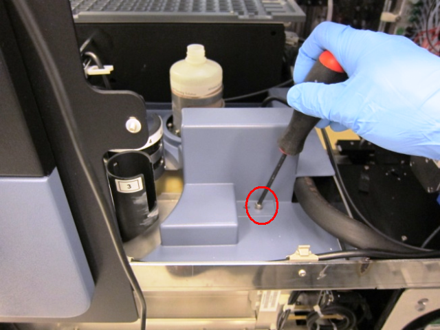
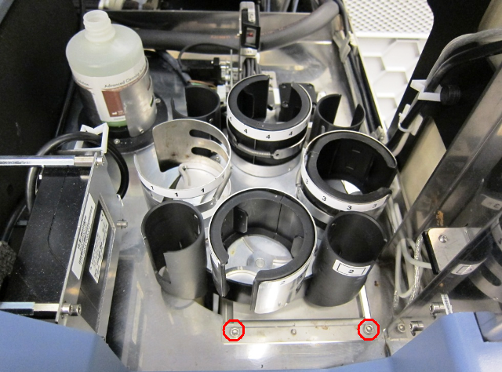
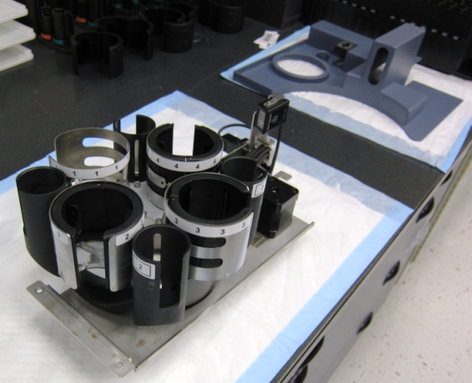
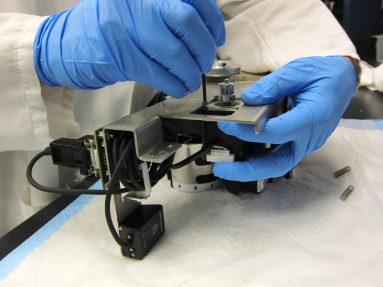
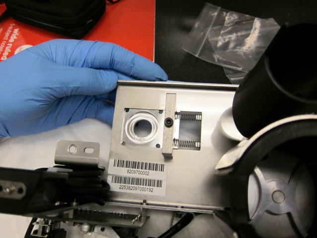
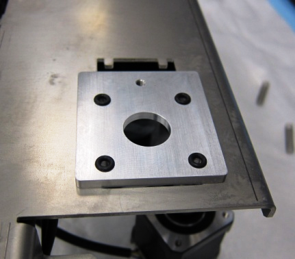
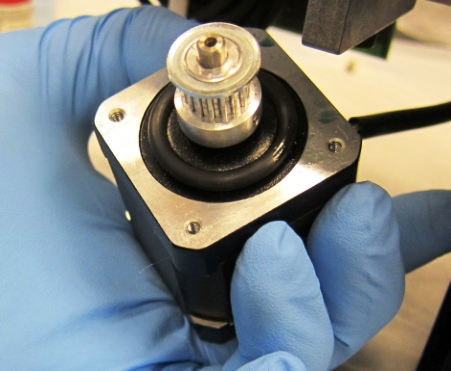
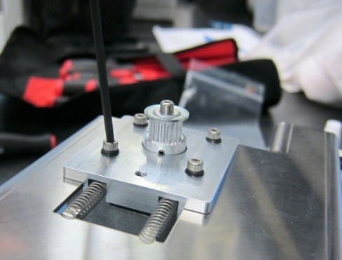
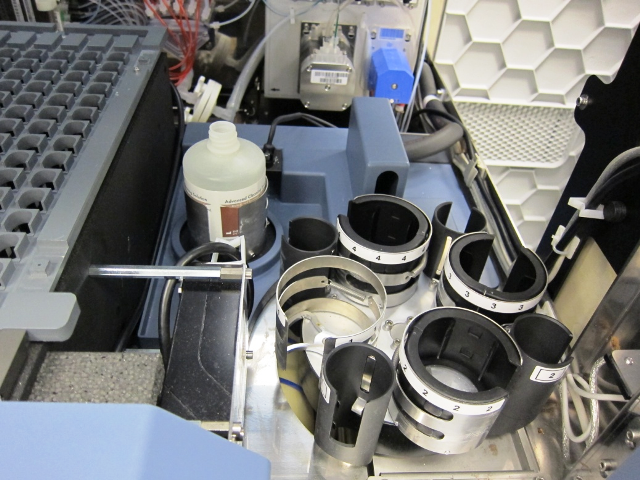

Parts and Materials Required
- 2.5 mm Allen wrench
- 3 mm Allen wrench
- 4 mm Allen wrench
- Absorbent pad
- Loctite 290 Wicking Grade
- TCR MIXER MOTOR MOUNT KIT
Time Required
- 45 minutes
Removal Procedure
- Power down the Panther System.
- Open the TCR
 Target capture reagent—An assay-specific reagent added as part of specimen pipetting. Carousel Door and the Right Side panel of the system.
Target capture reagent—An assay-specific reagent added as part of specimen pipetting. Carousel Door and the Right Side panel of the system. - Using a 4 mm Allen wrench, remove the screw that secures the TCR Carousel drip shield and remove the drip shield from the system.

- Disconnect the TCR Carousel motor power/communication cable from the PCB.
- Using a 4 mm Allen wrench, remove the two screws that secure the TCR Carousel module and remove the module from the system.


Note—Make sure to remove any cable ties holding the motor cables prior to pulling the module from the system. - Place the TCR Carousel on an absorbent pad on a bench top.

- Turn the TCR Carousel module upside down and use a 2.5 mm Allen wrench to loosen the four screws that secure the motor to the TCR Carousel module and remove the TCR Carousel drive belt.

- Unscrew the four screws completely to remove the motor from the module (save the two tensioning springs to install on the new motor mount).
Note—Be careful not to lose the tensioning springs when removing the motor from the module.
Replacement Procedure
- Prior to mounting the motor, install the new mount bracket and motor clamp with the tensioning springs.
Note—Keep the parts loosely installed to allow them to slide freely to tension the drive belt in step . 
- Place the four small O-Rings included in the motor mount kit in the mount bracket.

- Place the large O-Ring included in the motor mount kit on the motor before mounting the motor on the bracket.

- Feed the motor through the mount bracket and secure it using the four M3 mount screws included in the motor mount kit.

Note—Apply 290 Loctite to the motor mount screws before installing the motor. - Fully tighten the four mount screws and then back them off by one full turn.
- Place the drive belt on the motor and ensure that the belt is properly tensioned. Then fully tighten the motor mount clamp screw.
- Mount the TCR Carousel back into the system, connect the power/communication cable, and secure the TCR Carousel drip shield on top of the TCR Carousel module.

- Power on the Panther System.
- Launch Service Software.
- Open the Service Drawer to its fully extended position.
Note—Remove the injectors from the Luminometer prior to pulling the drawer open. - Using Service Software, initiate and activate the TCR Carousel.
- Open the Right Side panel to access the TCR Carousel motor mount screws from the bottom.
- If needed, use a 2.5 mm Allen wrench to adjust the four motor screws by ± 1/4 turn to reduce the motor noise level.
- Carefully close the Service Drawer and reconnect the Luminometer injectors.
- Reteach the Sample Pipettor to the TCR Carousel Module.
Alignment/Calibration/Prime/Firmware
Verification
- N/A
 button at the top of the page to send feedback, comments, or change requests.
button at the top of the page to send feedback, comments, or change requests.{kind=link}